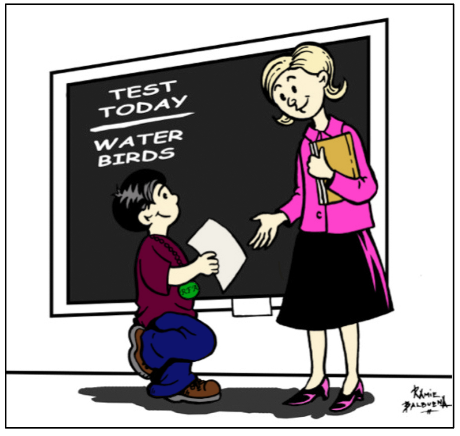
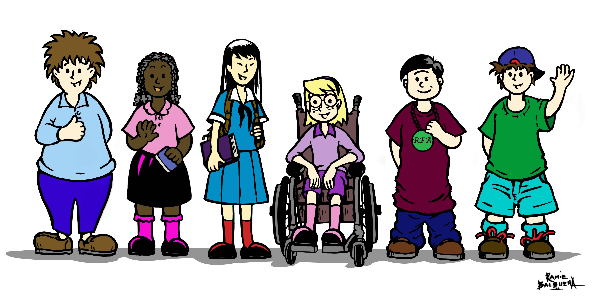

BlueStreak Math Fact Fluency: No More Counting on Your Fingers
PDF
It’s all done in your head. Math fact fluency means knowing the math facts, in addition, subtraction, multiplication and division, mentally and with automaticity and accuracy in order to do math problems instantly. Did you know this simple skill of memorizing math facts that can be accessed instantly and with cognitive automaticity, is a vital foundation for the study of the complex, higher-level mathematics such as algebra, geometry and calculus. The benefit can be striking. Students can free up their working memory with fact fluency permitting time and attention for more difficult tasks of reasoning and problem solving. Using a multi-sensory virtual model to impress learning on the brain from every direction, students follow a strategic pathway to mastery: See it! Hear it! Say It! Type it! Solve it! BlueStreakmath is a Prek-8, standards-based content that encompasses facts from 0-12. It is designed with specific content for Prek-3, early literacy students, as well as for regular and second chance readers in grades 4-8. Students are on a one-to-one application working on their own, at their own pace, with adaptive progressions to match and /or provide an adaptive challenge for their ability level.
- Determine and Act on Pre and Post Data
- Deliberate Practice with Multi-sensory Routines
- Optional Digital Enhancements for Mastery
App: BlueStreak Math Learn More
Testimonial:
Keep doing what you do! Never Have I had a presenter commend public school educators and show data that supports such commendations in such a genuine way. You are made for this! Jose Rodriguez Social Studies .
Assessment is Instruction: Routine, Reflective & Rigorous
PDF Assessment and Instruction go hand in hand. In fact, assessments inform instruction with both formative and summative data. The striking difference between assessment of instruction and assessment for instruction is found in the following two questions. Assessment of instruction asks: How did I do? Assessment for instruction asks: How am I doing? Summative assessments provide data for grades and rankings at the end point of the instruction. In this highly interactive session, participants will learn about, teacher-tested, tried and true informative assessment tools that they can apply immediately in their k12 classrooms. These tools and techniques are organized around three levels of implementation to use with ongoing, daily assessments in the classroom.
- Routine Informative Assessments
- Reflective Informative Assessments
- Rigorous Informative Assessments
Book: Informative Assessment: When it’s Not About a Grade Learn More
Testimonial:
Keep doing what you do! Never Have I had a presenter commend public school educators and show data that supports such commendations in such a genuine way. You are made for this! Jose Rodriguez Social Studies .
Personalized Learning: Student Engagement through Student Ownership
PDF Personalized Learning is about putting students first. When students are authentically engaged with content that has depth and complexity and when they have a sense of ownership of the learning decisions, they have a true emotional attachment to their own achievement. It does NOT mean all students working at their own level on a specific computer-based software program. Personalized learning means greater student achievement through self-determined change (interests), challenge (goals) and choice (methods). In short, the thrust of this professional learning is to learn more about how to foster student engagement as they become the “stewards of their own learning”.
-
Objectives and Outcomes:
- Shifting Learning to a Personalization Approach
- Igniting Emotions to Motivate Students
- Coaching Deliberate Practice with “Reach and Repeat”
Book: Unlocking Student Talent: The New Science of Developing Expertise
Testimonial:
It was all our pleasure to host you! I would love for this to be a continuous relationship so we can cycle through all the great workshops you present. You are certainly a treasure and I will be in touch! Tom L. Costello Principal .